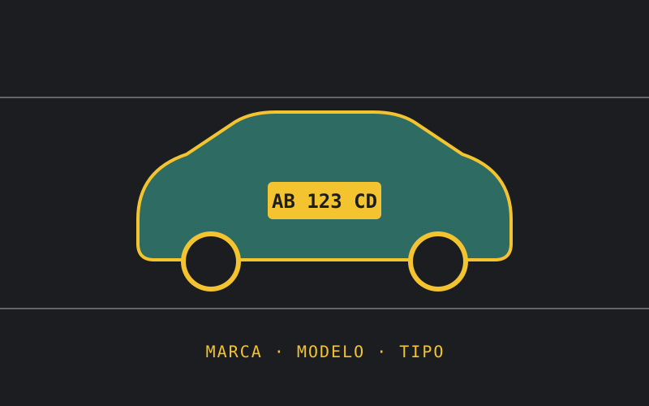

Backend · Seeker Parking
Diseño del esquema de base de datos para mapear automáticamente cada patente a un tipo de vehículo y, a partir de ahí, a un tipo de plaza.

Cuando un vehículo ingresa a un estacionamiento de Seeker Parking, su patente se valida automáticamente contra servicios externos: DataCar en Argentina y Placas.info en México. Esa validación devuelve marca, modelo y tipo de vehículo, que hay que mapear a un tipo de plaza dentro del predio.
marca_modelo_tipo, que se autocompleta durante la validación de patentesvehiculos, clientes_vehiculos, marca_modelo_tipo y tipo_plaza_marca_modelo_tiposUn buen mapeo evita que un vehículo quede sin tipo de plaza asignado, lo que podría bloquear el proceso de ingreso o generar inconsistencias en la facturación por tipo de espacio ocupado.
✎ Este proyecto es interno de Seeker Parking: revisá qué detalles podés compartir públicamente antes de publicar